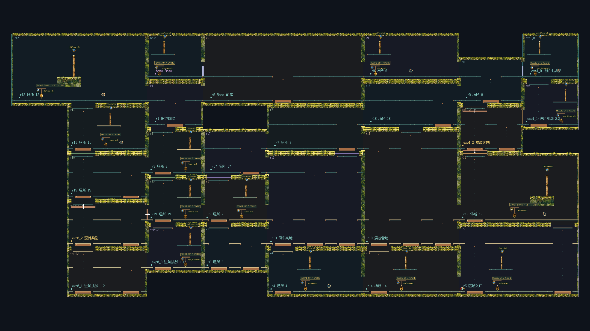

27个不同大小的Module，39处直接接缝。保留多路线、汇合与回环；Map新增地形为0，没有Module之间的短平台填充。

下载短视频 · 原片20–60秒连续节选，正常1倍速度，未删掉中途等待。
从入口完成两次反冲击铃奖励，经另一Module返回熟悉位置。98.67秒，5,855帧真实输入回放与物理结果逐帧一致。下载原片
下载主线原片 · 整图中的连续路线，正常1倍速度，无中途传送或资源重置。
14条整图路线全部通过，实际覆盖全部74个允许方向；禁止Boss开门、删掉奖励射击的反例均失败。27份Module通过现有文档检查，重读后拼装；第二个独立进程复用27/27，生成调用0次，再做真实接缝测试。
本页为新的直接拼接实验，旧短平台填充版已被否决。13个独立环只是拓扑描述，不是趣味评分。通用Module进入状态仍未签；候选未进入生产库，人工趣味认可待评。击铃/承载内容仍有重复，Boss是目标与门，尚非实际Boss战。